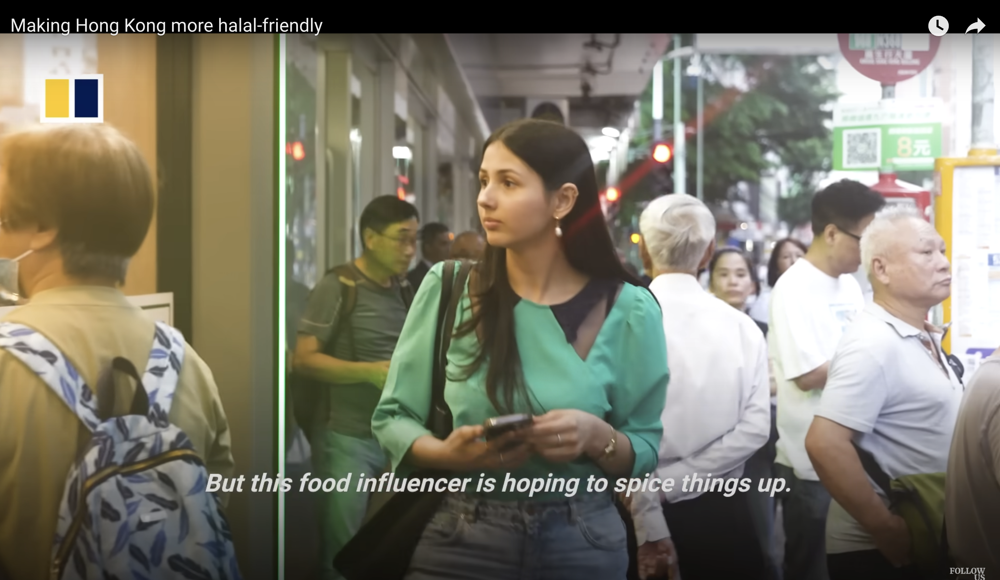

Audience need
Confidence before the visit
Clear, practical content that helps diners choose with confidence.
Growing a Hong Kong dining community around dietary-inclusive discovery — and helping restaurants reach the people looking for them.
Founder / growth & marketing lead
Hong Kong dining community
Local Hong Kong diners, ethnically diverse communities, expats and tourists seeking Halal, vegetarian, vegan and other dietary-inclusive options
Community growth, client acquisition, commercial partnerships and content strategy
Results across the Foodie Explorerz platform, shown as overall outcomes rather than attributing combined reel screenshots to separate posts.
Finding a restaurant that meets dietary needs can take extra research. Foodie Explorerz brings useful dining information and trusted recommendations together — while helping restaurants reach relevant diners.
Clear, practical content that helps diners choose with confidence.
Help restaurants reach a relevant audience beyond broad-reach advertising.
I grew the platform around one clear niche: dietary-inclusive dining in Hong Kong. Social content, restaurant features and SEO worked together to build reach and discovery.
Build a recognisable identity around inclusive dining discovery in Hong Kong, serving both local diners and visitors.
Produce short-form video, restaurant features and practical storytelling across Instagram, YouTube and the website.
Use social distribution, SEO, editorial planning and audience interaction to support ongoing discovery and engagement.
Foodie Explorerz developed into a community-led marketing platform for organisations looking to reach relevant diners in Hong Kong. Through branded content and audience-led campaigns, I translated each partner's brief into content designed to build awareness, encourage discovery and connect with a highly relevant audience.
Selected branded content collaboration, with permission to feature the approved brand identity.
Led a Ramadan community initiative that raised HK$20,000 for Feeding Hong Kong.
Served as an official supporting media partner for the HKTDC Food Expo, creating promotional content that generated 60,000+ views in a single day. Also supported physical pop-ups and retail bazaars through vendor onboarding, merchandising and on-site engagement.
Selected work across retail, industry events, editorial content and audience-engagement campaigns — from brief and creative direction through production and publishing.

Interaction mix: 2,338 likes · 42 comments. 77% of interactions came from non-followers.
View published carousel ↗
More than three-quarters of views came from non-followers.
View published Reel ↗
Interaction mix: 1,479 likes · 395 saves · 73 comments. 62.7% of interactions came from non-followers.
View published Reel ↗


Coordinated three partner brands, produced the campaign content, managed giveaway mechanics and drove audience participation.
Partner brands: Gaylord · Sohamna · Sweet Secrets
View full Instagram campaign ↗Led partner communication, campaign briefs, creative concepts, shoot planning, on-location filming, editing and publishing — including the Diwali giveaway collaboration.
Media features and interviews have highlighted Foodie Explorerz and the wider need for accessible dining information in Hong Kong.





Publication and broadcaster logos link to selected articles, interviews, talks and programme pages.
Represented the platform at industry events and delivered workshops on dietary-inclusive dining and audience engagement.


Foodie Explorerz became the foundation for a wider ecosystem spanning dining discovery, restaurant marketing and digital products.
Audience, content, social discovery and restaurant collaborations built around dietary-inclusive dining.
A related dietary-needs restaurant discovery platform built around dietary filters and a curated restaurant directory.
Extending Foodie Explorerz into a growth partner for restaurants through marketing strategy, brand storytelling and AI-enabled solutions designed to support customer acquisition and business operations.
Exploring how AI can support restaurant marketing, customer acquisition and day-to-day operations. The visuals show early creative concepts.


I led growth and day-to-day delivery, from business development and partnerships to campaigns, content production and vendor coordination.
Audience research, niche positioning, brand storytelling, campaign strategy, channel planning, content, SEO, analytics and growth initiatives.
Prospect research, lead generation, outreach, discovery, pitch decks, proposals, negotiation, client accounts, corporate partnerships and creator campaigns.
Creative concepts, scripts, storyboards, casting, location sourcing, shoot planning, on-location filming, editing and publishing.
Project management, timelines, budgets, client and vendor coordination, merchandise and packaging, supplier management, pop-ups, events and workshops.
I independently developed Foodie Explorerz Collection as a brand extension of Foodie Explorerz, leading the process from concept and design through photoshoot production and in-person retail activation.
Explore the creative work, production and pop-up experience in the dedicated project showcase.
A look at the collection, its visual identity and the creative direction behind the launch.